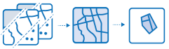

Cet outil permet de créer de nouvelles entités dans votre zone d'étude répondant à une série de critères que vous définissez. Ces critères peuvent reposer sur des requêtes attributaires (par exemple, des parcelles vacantes) et des requêtes spatiales (par exemple, des parcelles entières situées à moins d'un mile d'une rivière et des portions de parcelles situées à moins d'un mile d'une rivière).
Si l'option Utiliser l'étendue courante de la carte est sélectionnée, seules les entités de la couche d'analyse qui sont visibles au sein de l'étendue courante de la carte seront analysées. Si l'option n'est pas sélectionnée, toutes les entités seront analysées, même si elles se trouvent en dehors de l'étendue courante de la carte.
Cliquez sur le bouton Ajouter une expression pour définir une expression. Vous pouvez ajouter plusieurs expressions. Après avoir entré les expressions et cliqué sur le bouton Exécuter l'analyse, les entités de votre couche d'analyse sont filtrées à travers chaque expression. Les portions d'entités qui respectent toutes les expressions sont écrites dans la couche résultat.
Vous pouvez créer deux types élémentaires d'expressions : attributaires et spatiales. Les expressions attributaires sont des requêtes sur des valeurs de champs, telles que
où le nom est 'San Francisco'. Il existe quatre types d'expressions spatiales :
Une négation correspond à chaque expression spatiale : pas à une certaine distance de, n'englobe pas entièrement, pas complètement dans et n'intersecte pas.
Il s'agit du nom de la couche qui sera créée dans votre page Mes contenus et ajoutée à la carte. Le nom par défaut repose sur le type d'analyse et sur le nom de la couche d'analyse. Si la couche existe déjà, vous serez amené à confirmer son remplacement.
La zone de liste déroulante Enregistrer le résultat dans vous permet de spécifier le nom d'un dossier dans Mes contenus où le résultat sera enregistré.